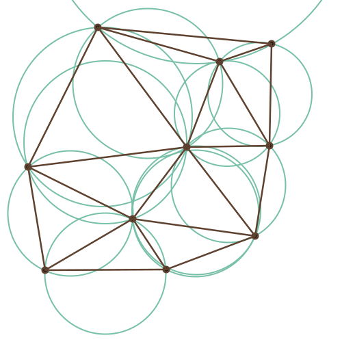

Delaunay's Scissors
An interactive demo of the Delaunay triangulation algorithm and the Wallace–Bolyai–Gerwien theorem.
by Zivvy Epstein and Dima Smirnov
Definition (Delaunay triangulation)

A Delaunay triangulation for a set of points is the triangulation with the maximum minimal angle in its triangles. This is achieved by repeatedly "flipping" edges if they are inside a triangle's circumcircle.
Theorem (Wallace-Bolyai-Gerwien)

Any simple polygon can be cut into finite pieces and stuck back together to form any other simple polygon of equal area.
You:
- Click anywhere to start drawing the initial polygon. Click back in the orange circle when you are finished
- Similarly, draw the terminal polygon.
We:
- Rescale the polygons so that they are of equal area.
- Cut the initial polygon into random triangles.
- Find the Delaunay triangulation.
- Take a random edge whose triangles form a convex quadrilateral.
- Draw the circumcirlce of one of the edge's triangles.
- If a point in the other triangle is inside the circle, flip the edge.
- Repeat until there are no ledges left to flip.
- Cut and rearrange the triangles into a stack of rectangles.
- Cut new rectangles, turn them into triangles, and place them inside the terminal polygon.